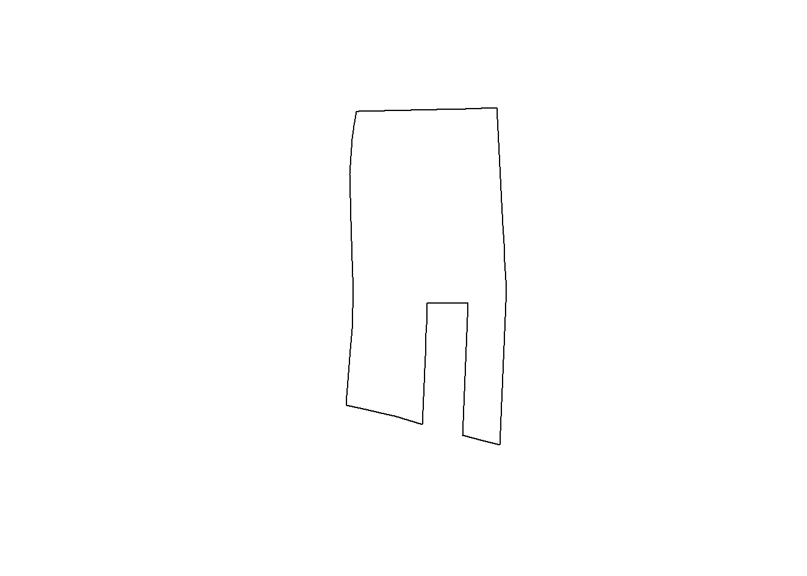
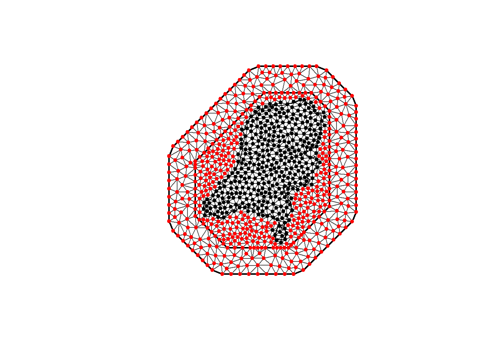

Having completed an examination of Air Pollutoin modelling in INLA and INLABRU, it is time to move on to modelling the point process
Using data from GBIF.org (10 January 2025) GBIF Occurrence Download https://doi.org/10.15468/dl.p5cy6n
4.1 LGCP in INLA introduction
Following https://www.paulamoraga.com/book-spatial/point-process-modeling.html for the INLA intro.
library(INLA)
Loading required package: Matrix
Loading required package: sp
This is INLA_24.05.01-1 built 2024-05-01 18:49:50 UTC.
- See www.r-inla.org/contact-us for how to get help.
- List available models/likelihoods/etc with inla.list.models()
- Use inla.doc(<NAME>) to access documentation
library(inlabru)
Loading required package: fmesher
library(sf)
Linking to GEOS 3.11.2, GDAL 3.8.2, PROJ 9.3.1; sf_use_s2() is TRUE
library(ggplot2)library(viridis)
Loading required package: viridisLite
library(terra)
terra 1.7.78
library(dplyr)
Attaching package: 'dplyr'
The following objects are masked from 'package:terra':
intersect, union
The following objects are masked from 'package:stats':
filter, lag
The following objects are masked from 'package:base':
intersect, setdiff, setequal, union
library(readr)
TODO: Fix issue reading data. StillIMage is doing something
Reading layer `landsgrens' from data source
`D:\data\maps\netherlands_bestuurlijkegrenzen_2021\bestuurlijkegrenzen.gpkg'
using driver `GPKG'
Simple feature collection with 1 feature and 2 fields
Geometry type: MULTIPOLYGON
Dimension: XY
Bounding box: xmin: 10425.16 ymin: 306846.2 xmax: 278026.1 ymax: 621876.3
Projected CRS: Amersfoort / RD New
map <-st_union(map)map <-st_as_sf(map)plot(map)
# Damn it, there's a little isolated spec in the map!border_polygon <-st_cast(map, "POLYGON")border_polygon <-st_as_sfc(border_polygon)geos <-lapply(border_polygon, function(x) x[1])for (g in geos){plot(st_polygon(g))}

# Get the border polygonborder_final <-st_polygon(geos[[1]])# We still need sf objectborder_final <-st_sfc(border_final, crs=st_crs(map))border_final <-st_as_sf(border_final)plot(border_final)
We then do something a little tricky. The mesh is larger than the domain that the points were observed in or the study region. So the intersections between the polygons in the mesh and the locations in \(D\) are computed
mesh_sf <-st_as_sf(dmesh)mesh_sf <-st_set_crs(mesh_sf, projMercator)# Check if the mesh polygons overlap with any of the locations w <-sapply(1:length(dmesh), function(i) {if(length(st_intersects(mesh_sf[i,], domain_sf)[[1]])>0){return(sf::st_area(sf::st_intersection(mesh_sf[i, ], domain_sf))) }elsereturn(0)})sum(w)
[1] 111060620373
st_area(map)
111060620373 [m^2]
plot(mesh)plot(domain_sf, add=T, col="green")points(mesh$loc[which(w >0), 1:2], col ="black", pch =20)points(mesh$loc[which(w ==0), 1:2], col ="red", pch =20)

TODO: January 13th. Okay, now i’m stuck again. Finish later
y.pp <-rep(0:1, c(nv, n))e.pp <-c(w, rep(0, n))# Projection matrix for the integration points (mesh vertices)A.int <-Diagonal(nv, rep(1, nv))# Projection matrix for observed points (event locations)A.y <-inla.spde.make.A(mesh = mesh, loc = coo)# Projection matrix for mesh vertices and event locationsA.pp <-rbind(A.int, A.y)# We also create the projection matrix Ap.pp for the prediction locations.Ap.pp <-inla.spde.make.A(mesh = mesh, loc = coop)
# stack for estimationstk.e.pp <-inla.stack(tag ="est.pp",data =list(y = y.pp, e = e.pp), A =list(1, A.pp),effects =list(list(b0 =rep(1, nv + n)), list(s =1:nv)))# stack for prediction stk.pstk.p.pp <-inla.stack(tag ="pred.pp",data =list(y =rep(NA, nrow(coop)), e =rep(0, nrow(coop))),A =list(1, Ap.pp),effects =list(data.frame(b0 =rep(1, nrow(coop))),list(s =1:nv)))# stk.full has stk.e and stk.pstk.full.pp <-inla.stack(stk.e.pp, stk.p.pp)
formula <- y ~0+ b0 +f(s, model = spde)res <-inla(formula, family ='poisson',data =inla.stack.data(stk.full.pp),control.inla=list(int.strategy ='grid', strategy="laplace"),control.predictor =list(compute =TRUE, link =1,A =inla.stack.A(stk.full.pp)),E =inla.stack.data(stk.full.pp)$e)
mean sd 0.025quant 0.5quant 0.975quant mode
Theta1 for s 8.14040 0.001247988 8.137666 8.140495 8.142519 8.140964
Theta2 for s -11.45034 0.009720901 -11.466856 -11.451076 -11.429055 -11.454715
TODO: What is this domain stuff for exactly? The integration? Should be equation 3 of Simpson (2016).
# TODO: Make sure I get the same result as inla. Options and mesh are off# Oh nice we can name the intercept but then need to subtract 1 to get rid of the default interceptformula_inlabru <- geometry ~b0(1) -1+f(geometry, model = spde)fit1 <-lgcp(formula_inlabru, data=d, sampler=domain_sf, domain =list(geometry = mesh), options =list(control.inla=list(int.strategy ='ccd', strategy="laplace")))# control.compute=list(config=TRUE),# control.results=list(return.marginals.random = TRUE,# return.marginals.predictor = TRUE),# control.predictor = list(compute = TRUE)))summary(fit1)
inlabru version: 2.12.0
INLA version: 24.05.01-1
Components:
b0: main = linear(1), group = exchangeable(1L), replicate = iid(1L), NULL
f: main = spde(geometry), group = exchangeable(1L), replicate = iid(1L), NULL
Likelihoods:
Family: 'cp'
Tag: ''
Data class: 'sf', 'data.frame'
Response class: 'numeric'
Predictor: geometry ~ .
Used components: effects[b0, f], latent[]
Time used:
Pre = 0.691, Running = 1.47, Post = 0.175, Total = 2.33
Fixed effects:
mean sd 0.025quant 0.5quant 0.975quant mode kld
b0 -21.688 1.4 -24.492 -21.662 -19.041 -21.66 0
Random effects:
Name Model
f SPDE2 model
Model hyperparameters:
mean sd 0.025quant 0.5quant 0.975quant mode
Theta1 for f 8.85 0.106 8.66 8.85 9.07 8.83
Theta2 for f -12.74 0.873 -14.74 -12.63 -11.41 -12.07
Deviance Information Criterion (DIC) ...............: -126820.99
Deviance Information Criterion (DIC, saturated) ....: NA
Effective number of parameters .....................: -127802.62
Watanabe-Akaike information criterion (WAIC) ...: 7199.81
Effective number of parameters .................: 2414.72
Marginal log-Likelihood: -64580.42
is computed
Posterior summaries for the linear predictor and the fitted values are computed
(Posterior marginals needs also 'control.compute=list(return.marginals.predictor=TRUE)')
TODO: Oh wow, why is b0 so different between inla and inlabru.
predictions1 <-predict(fit1, newdata=dp, formula =~ b0 + f)predictions2 <-predict(fit1, newdata=dp, formula =~ f)ggplot() +geom_sf(data=predictions1, aes(color=mean)) +scale_colour_gradient(low ="blue", high ="yellow")
# Check the contribution of just the spatial fieldggplot() +geom_sf(data=predictions2, aes(color=mean)) +scale_colour_gradient(low ="blue", high ="yellow")
Then, we can move onto multiple likelihoods and inlabru